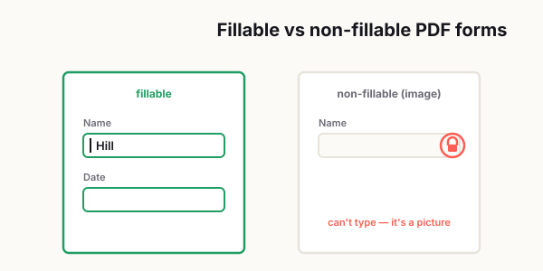

Why Your PDF Form Won't Work and How to Fix It
PDF forms are supposed to be simple. Click, type, save, done. That's the promise, anyway. In real life, you open the file and suddenly nothing works. The text box won't let you type, the checkbox is frozen, the Save button acts weird, or the person on the other end says your answers are missing. For something that should take two minutes, it somehow turns into a small, annoying crisis.

The frustrating part is that PDF forms usually fail in ways that feel random. One file works fine on your laptop but breaks on your phone. A form opens perfectly in one app and falls apart in another. You type everything in, hit save, feel relieved for about ten seconds, and then reopen the document only to find half your answers are gone. At that point, you stop feeling like the problem is the file. You start feeling like maybe the problem is you.
Most of the time, it isn't you.
The truth is that PDF forms sit in a weird middle ground between documents and software. They look simple, but under the hood they depend on form fields, permissions, app compatibility, fonts, scripting, and how the file was originally built. That's why a form can look completely normal and still behave like it's held together with tape.
Let's break down why this happens, what kind of PDF you're actually dealing with, and how to fix the problem without losing your answers or your patience.
What Makes a PDF Form Fillable in the First Place
A lot of people assume that if a document looks like a form, it must be fillable. That would make sense, but it's not always true. Some PDFs are true fillable forms, which means they contain interactive fields you can click into and type inside. Others are basically just digital paper. They may have blank lines, boxes, and labels, but they're still just static content.
That difference matters more than most people realize.
A fillable PDF usually contains actual text fields, dropdown menus, checkboxes, radio buttons, date fields, or signature areas. When you open the file in a compatible app, you can click directly into the field and interact with it. A non-fillable PDF, on the other hand, may only look interactive. If it was scanned from paper or exported as a flat document, there may be nothing to click at all.
This is where a lot of confusion starts. People open a non-fillable PDF, try to type into it, and assume the file is broken. In reality, the file may be working exactly as designed. It just wasn't designed to be completed digitally.
If you click around and nothing highlights, nothing accepts input, and your cursor never changes to indicate a field, there's a good chance you're dealing with a non-fillable file. In that case, the fix is different. You may need to use a text annotation tool, a fill-and-sign feature, or convert the document into a fillable form before you can use it properly.
So the first question is simple: is this actually a fillable PDF, or is it just pretending to be one?
Why PDF Forms Work on One Device and Break on Another
Here's where things get extra annoying. Even when a PDF really is fillable, it may not behave the same way everywhere.
That's because not every device or app handles PDF features the same way. Desktop apps tend to support more advanced form behavior. Mobile apps often support only the basics. Browser-based viewers can be fast and convenient, but some of them don't play nicely with interactive fields, custom scripts, embedded fonts, or complex save behavior.
That's why the same form may work perfectly on a Windows laptop, open halfway on an iPhone, and act completely dead inside a browser tab.
You'll also run into problems when the form creator used advanced elements such as calculated fields, required field logic, JavaScript actions, custom validation, or uncommon formatting rules. On paper, all of that sounds helpful. In practice, it can create compatibility issues across platforms.
Another thing people don't think about is file origin. A form created in one application, edited in another, flattened in a third, and then uploaded to a cloud drive may end up behaving unpredictably. PDFs are durable, but they are not magical. The more hands a form passes through, the more likely something subtle gets messed up.
So if your form works on one device but not another, don't immediately assume the file is corrupt. It may just be opening in an environment that doesn't fully support it.
Browser Viewers vs Dedicated PDF Apps
This is one of the biggest reasons PDF forms fail, and honestly, it catches people all the time.
Opening a PDF in a browser is convenient. You click the file, it opens instantly, and you assume that's good enough. Sometimes it is. But browser viewers are often stripped-down readers, not full-featured PDF environments. They can display pages, sure, but they may not fully support interactive forms, embedded scripts, saving behavior, or digital signatures.
That's when you get weird issues like these:
- You can see the form fields, but you can't type into them.
- You can type, but your answers don't save.
- The checkboxes don't respond.
- The file downloads as a blank version.
- The formatting shifts and makes the form look broken.
A dedicated PDF application is usually more reliable because it's built to handle the full structure of the file. If a form is acting strange in a browser, the easiest fix is often the simplest one: download the file first, then open it in a proper PDF app.
It sounds basic, but that one step solves a surprising number of problems.
If you're helping less technical users, this is worth spelling out clearly. Don't just send the form and assume they'll know what to do. Tell them to download it first. Tell them not to fill it out inside a preview window. Tell them to save a copy before they begin. Those tiny instructions can prevent a lot of frustrating back-and-forth later.
In my 20 years doing IT support, "this form won't let me type" is one of the tickets I've seen a thousand times. I support colleagues across a dozen countries, and the very same blank form would work fine for someone in Germany on a desktop reader, then completely freeze for a teammate opening it in a phone browser. Most of the time the file wasn't broken at all — they were previewing it in an email app that ignores form fields, or the form had been flattened somewhere along the way. I'd just have them download it and open it in a real PDF reader, and the fields came back to life. That one habit closed more of these tickets than any setting ever did.
— Hill, 20 years in IT supportHow to Fix Locked, Frozen, or Broken Form Fields
Once you know the form should be fillable, the next step is figuring out why the fields still won't cooperate.
First, check whether the document is locked or restricted. Some forms are intentionally protected to prevent editing, printing, or certain types of interaction. That protection is sometimes necessary, but it can also make the file confusing. A user may think the form is broken when the real issue is that the permissions are too aggressive.
Second, try another app. This is the quickest troubleshooting move and often the most effective. If the field is frozen in one viewer but works in another, the field probably isn't broken at all. The problem is the viewer.
Third, look for signs that the form was flattened. Flattening can turn interactive fields into static content. Once that happens, the form may still look normal, but the fields are no longer editable. If someone filled out the file and then exported or printed it back into PDF format, the original fillable structure may be gone.
Fourth, check whether the form creator used fields incorrectly. Sometimes a text box was added visually but not configured as a true input field. Other times, field names conflict, validation rules are too strict, or scripts are interfering with normal behavior.
If you're the user, your best options are usually these:
- Download the file locally.
- Open it in a dedicated PDF app.
- Save a new copy with a new filename.
- Test one field before filling the whole document.
- If nothing works, ask for a new copy or a simpler version.
If you're the one sending the form out, simplify before you get fancy. A form that works for everyone beats a form with clever automation that breaks for half your audience.
How to Save a PDF Form Without Losing Your Answers
This is the part that drives people crazy because it feels unfair. You did the work. You typed everything carefully. You hit save. And somehow the data still disappears.
When that happens, it's usually one of a few things. The file was filled out inside an incompatible viewer. The save process didn't preserve interactive data correctly. The form itself was built poorly. Or the user accidentally saved a copy in a flattened or altered format.
The safest workflow is not glamorous, but it works.
First, download the original PDF to your device before doing anything else. Don't rely on a browser preview. Don't trust that a cloud tab will save the form properly. Start with a local copy.
Second, open the file in a reliable PDF application. Fill out a couple of fields as a test. Save the file. Close it. Reopen it. If the answers are still there, keep going.
Third, when you finish the form, use "Save As" instead of just "Save" if you want extra protection. Give the file a new name so you always keep the blank original. This is especially helpful when the form is important, time-sensitive, or annoying to complete.
Fourth, reopen the saved file before sending it to anyone. This step takes ten seconds and can save you from a very embarrassing email later.
A simple routine like this can prevent most "my answers disappeared" problems:
- Download first.
- Open locally.
- Fill a test field.
- Save a new copy.
- Reopen and verify.
- Then send.
That may sound overly cautious, but once you've lost twenty minutes re-entering address details, tax info, or application answers, it stops sounding excessive pretty fast.
What to Tell Users If You're the One Creating PDF Forms
If you create forms for clients, customers, patients, students, or internal teams, this part matters a lot.
A form that seems obvious to you may be confusing to everyone else. And when users get confused, they usually don't say, "This form has a compatibility issue between environments." They say, "Your file doesn't work."
So make it easy on them.
First, keep the form structure simple. Use standard text fields, checkboxes, and dropdowns whenever possible. Avoid unnecessary scripting unless it truly adds value. Fancy logic is nice until it breaks in a real-world environment.
Second, test the form in more than one place. Don't just test it in the exact app you used to create it. Open it on desktop. Open it on mobile. Try it in a browser viewer and in a dedicated app. Make sure fields can be entered, saved, reopened, and submitted.
Third, include one short instruction block at the top of the form or in the email that sends it out. Something like this works well:
"Please download this PDF before filling it out. Open it in a PDF app, complete the form, save a copy, and reopen it to confirm your answers were saved."
That one paragraph can prevent a huge amount of confusion.
Fourth, think about the user's stress level. Most people filling out forms are not doing it for fun. They're applying for something, responding to a request, sending documentation, or trying to finish a task quickly. Every extra point of friction makes the experience feel worse than it needs to be.
Good form design is not just about whether the file technically works. It's about whether normal people can complete it without second-guessing every step.
A Simple Way to Troubleshoot Any PDF Form
When a PDF form fails, people often jump straight into random fixes. They switch apps, re-download the file five times, take screenshots, email support, and start over from scratch. That usually creates more confusion than clarity.
A better approach is to troubleshoot in order.
Ask these questions:
- Is the file actually fillable?
- Am I opening it in a browser instead of a proper PDF app?
- Can I type into at least one field?
- Do my answers remain after saving and reopening?
- Is the file locked, flattened, or damaged?
- Can I get a fresh copy from the sender?
That sequence helps you narrow the issue fast. It also keeps you from wasting time on fixes that don't match the real problem.
Most PDF form issues are not dramatic. They're just annoying. But because forms are often tied to deadlines, money, compliance, applications, or client communication, even a small issue can feel much bigger in the moment.
That's why it helps to have a repeatable method instead of guessing.
Final Thoughts
PDF forms are one of those tools that seem simple until they aren't. When they work, nobody thinks about them. When they break, they instantly become everyone's problem.
The good news is that most form issues come down to a few predictable causes: the file isn't truly fillable, the wrong app is being used, the fields were flattened, the viewer doesn't support the form properly, or the save process is unreliable. Once you know what to look for, the fix usually gets a lot easier.
So the next time a PDF form refuses to cooperate, don't panic and don't retype everything immediately. Check the type of file, switch to a dedicated PDF app, save carefully, and confirm your answers before sending. That small habit alone can save you a lot of stress.
Frequently asked
Why can't I type into a PDF form?
You may be opening a non-fillable PDF, a flattened form, or a file inside a browser viewer that does not support interactive fields correctly. Try opening the file in a dedicated PDF app instead.
Why do PDF form answers disappear after saving?
Answers can disappear when the form is opened in an incompatible viewer, when the file is not saved properly, or when the form fields are not configured correctly by the creator. Save a local copy first and reopen it in a full PDF application.
What is the difference between a fillable and non-fillable PDF?
A fillable PDF contains interactive fields such as text boxes, dropdowns, and checkboxes. A non-fillable PDF is usually just a static document that looks like a form but cannot accept typed input unless you use annotation or form creation tools.
Why does a PDF form work on one device but not another?
Different devices and apps render PDF forms differently. Some browser viewers and mobile apps only support basic PDF features, which can cause missing fields, broken formatting, or unsaved answers.
How do I save a PDF form without losing my data?
Download the file first, open it in a reliable PDF app, fill it out, and use Save As to create a local copy. Reopen the saved file before sending it to confirm your answers are still there.
What should I do if I create PDF forms for clients or users?
Test the form on desktop, mobile, and at least one browser and one dedicated PDF app. Add clear instructions, keep fields simple, and confirm that users can save and return the file without losing data.